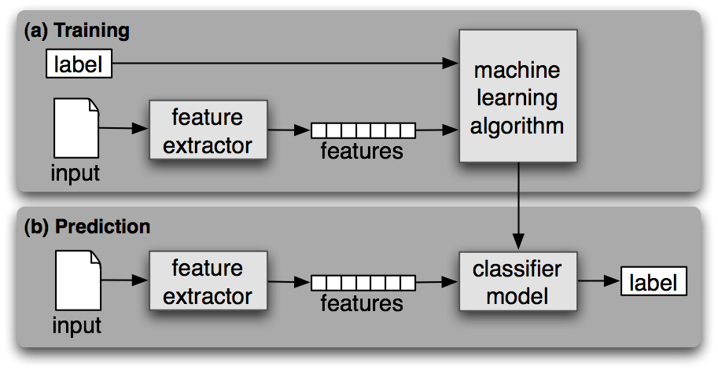
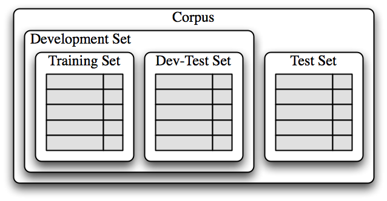

Unit 7#
Basics of machine learning#
Machine learning is simply the process of learning patterns from data, in order to predict patterns in new data. There are many good introductions out there, but one focused on machine learning to classify text is in Chapter 6 of the NLTK book.
One of the most common applications of machine learning is classification, where we use an algorithm to learn, from existing labelled data, what are the characteristics, or features of something, so that we can classify it into categories. For example, you can classify:
Email messages as spam or not spam
News articles as politics, sports, arts, etc.
News as fake or not
Reviews as 1-star, 2-star, etc.
To do this task, we need:
Labelled examples (e.g., 1,000 spam messages and 1,000 not spam)
Features that we think are relevant (e.g., mentions money or contains requests)
An algorithm to extract those features
We call this supervised classification, because we give the algorithm data with labels. The labels are a form of supervision. If we just gave it data with no labels (e.g., all the email messages I got the last month, without knowing whether they are spam to me or not), then that’s unsupervised classification.
After we have fed the data with labels to an algorithm, then we have built a classifier or a model. The classifier is then ready to process new or unseen data, to give us results, that is, to make predictions about new data. This is how the NLTK book represents it:

Machine learning is often an iterative process. You try something, you test it, and then you refine the training again. To do so, we divide the data up in chunks. The first training set is called, well, training data set. The chunk we use to test and refine is called dev-test set (for development + testing), or sometimes validation set. You also reserve a test set, for final tests that the classifier is performing as you expect and is maybe ready to be released into the world.

Classifying names#
To illustrate this, we are going to classify names into whether they are more likely to be the name of a man or a woman. This is a very simplistic task, which conceives of gender as binary, and which correlates names and gender. There are issues with this task, but here we propose it as an exercise in classification.
We will use the “names” corpus from NLTK. It contains two lists of names, typically assigned to men and to women. Then, we will use as a feature the last letter of the name.
# import nltk, the corpus and the random module
import nltk
from nltk.corpus import names
import random
Names corpus#
The corpus contains two lists, ‘male.txt’ and ‘female.txt’, with lists. Just inspect them on the screen (next 2 cells).
Then, we will create a list of tuples, with the name and the gender it has assigned to it, called ‘labeledNames’. Finally, we randomize the lists, so that we have a random list from which to extract the training and dev-test sets.
names.words('male.txt')
names.words('female.txt')
# construct the dataset
labeledNames = ([(name, 'male') for name in names.words('male.txt')] +
[(name, 'female') for name in names.words('female.txt')])
# shuffle the data set
random.shuffle(labeledNames)
labeledNames
Splitting the data#
Now let’s look at how we will split up our dataset for training and evaluation. We will split up the dataset into training, development, and test.
The training set is used to train our initial model and the development test set will be used to test the initial model and tweak it before testing it on the final test set. The reason for a separate development test set is that once we test our model on this test set and modify our model, this test set that we used can no longer give us accurate metrics for accuracy, since we used it to tweak the model. That is, we know what it contains and we know that the tweaks work for it.
So, in the next code block we generate a feature set from our data and split this up into the relevant sub sets. We first find out the length of the total data set and then we split it into:
70% training
20% development
10% testing
len(labeledNames)
# divide 70, 20, 10
length = len(labeledNames)
len_training = int(length * 0.7)
len_dev = int(length * 0.2)
len_test = int(length * 0.1)
# print to double-check
print(len_training)
print(len_dev)
print(len_test)
Python info: List locations#
We are going to use a cool feature of lists in python. A list has an index for where items are. So if we have the list:
alphabetList = ['a', 'b', 'c', 'd', 'e', 'f', 'g']
Then we can access the index of each of those items:
alphabetList[0]
alphabetList[1]
alphabetList[2]
Those three statements will print: ‘a’, ‘b’, ‘c’, respectively (try it below).
We can also access a range within the list, by using colon:
alphabetList[0:3]
Note that this means “give me the list starting at 0 (included) and ending at 3 (not included)”. Check the output below, where it gives the items 0, 1, and 2 (a, b, c).
You can also just omit the “0” part if you want to start at the beginning:
alphabetList[:3]
alphabetList = ['a', 'b', 'c', 'd', 'e', 'f', 'g']
print(alphabetList[0])
print(alphabetList[1])
print(alphabetList[2])
alphabetList[0:3]
alphabetList[:3]
# divide the names list into 3 parts, slicing by the variables above, which tell us how many items
# is 70%, 20%, 10%
trainingNames = labeledNames[:len_training]
devtestNames = labeledNames[len_training:(len_training + len_dev)]
testNames = labeledNames[(len_training + len_dev):]
# print to double-check
print(len(trainingNames))
print(len(devtestNames))
print(len(testNames))
Define a feature extraction function#
The main step in supervised machine learning (and in supervised text classification) is to define the features that you think will be relevant. In this case, I think the last letter of the name is important to guess whether a man or a woman is more likely to have that name.
Then, we’ll define a feature extractor function that returns the last letter of the name. The function returns a dictionary of all the names, where the key is “suffix” and the value is the last letter in the name.
Once we define the function, we can call the function, that is, we can use it, to go through all the names in each of the 3 data sets, and extract features (i.e., the last letter) from all the names in the list.
# define the function
def featureExtractor(name):
# name[-1] will select the last letter of the name
return {'suffix1': name[-1:]}
# call the function to extract the features from each set
trainingSet = [(featureExtractor(n), gender) for (n, gender) in trainingNames]
devtestSet = [(featureExtractor(n), gender) for (n, gender) in devtestNames]
testSet = [(featureExtractor(n), gender) for (n, gender) in testNames]
# check the contents of trainingSet
# you'll see that the names have been reduced to a letter
trainingSet
Train a classifier#
Now that we have our various datasets, we can start training our model using the training set. We will be using a “naive Bayes” classifier which you can read more about in Section 5 of Chapter 6 in the NLTK book.
Then, we run an NLTK function to give us the accuracy of the classifier in the devtestSet.
Finally, you can go and see which features the classifier uses, the most informative features.
# run the classifier with the trainingSet
classifier = nltk.NaiveBayesClassifier.train(trainingSet)
# check accuracy on the devtestSet
print("Accuracy on the dev-test set:", nltk.classify.accuracy(classifier, devtestSet), "\n")
# check what the most informative features are in our model
classifier.show_most_informative_features(5)
Checking the features#
As you can see above, names ending in ‘a’ are predominantly female according to our classifier and names ending in ‘k’ are mostly male. To improve our model, we will generate a list of names that our classifier gets wrong using the devtestSet.
# create an empty list to store the errors
errors = []
# loop through the devtestNames to classify the entire name
# store the errors in the list
for (name, tag) in devtestNames:
guess = classifier.classify(featureExtractor(name))
if guess != tag:
print("correct=%s guess=%s name=%s" % (tag, guess, name))
Adjusting the features#
Remember that our classifier only looks at the the last letter of each name. From this list, however, we see that sometimes the last two letters are a better indicator of gender. This is because names ending in ‘yn’ or ‘en’ are mostly female, even though most names ending in ‘n’ are male. This tells us that we should add another feature to our model to improve it. This second feature will be the second to last letter of the name.
So we write a new feature extractor function, which expands the dictionary to include the last letter and the last-but-one letter (the penultimate letter).
def featureExtractor2(name):
# suffix1 returns the last letter of the name and suffix2 returns the last two letters
return {'suffix1': name[-1:], 'suffix2': name[-2:]}
Training a new classifier#
Now that we created a second feature extractor, let’s re-train our model before we can finally test it on our test set.
trainingSet2 = [(featureExtractor2(n), gender) for (n, gender) in trainingNames]
devtestSet2 = [(featureExtractor2(n), gender) for (n, gender) in devtestNames]
testSet2 = [(featureExtractor2(n), gender) for (n, gender) in testNames]
classifier2 = nltk.NaiveBayesClassifier.train(trainingSet2)
print("Accuracy on the dev-test set:", nltk.classify.accuracy(classifier2, devtestSet2))
Testing on test set#
As you can see, our model improved by about 2% by adding one extra feature. But we need to remember that we are only testing on our devtestSet here. This is the set that we investigated and optimized for.
In order to really know how our model is doing, we need to test it on data that it has never seen before. This is why we have a testSet which we do not use until our model is finalized. Let’s run this final model on our testSet and see the actual expected accuracy of our model.
print("Accuracy on the test set:", nltk.classify.accuracy(classifier2, testSet2))
As you can see, our model got around 76%-81% of tags correct depending on how the data was shuffled. This is fairly good since our model has never seen this data.
Summary#
We have learned the basics of supervised machine learning. Make sure you review these concepts:
Text classification
Data: training set, dev-test set, test set (note that data is also called ‘corpus’ or ‘dataset’)
Features
Classifier / model
Algorithm